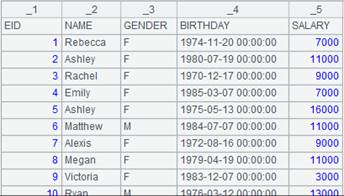
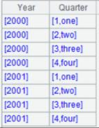

Description:
Get a sequence of workdays between two dates inclusive.
Syntax:
workdays(b,e,h)
Note:
The function gets a sequence of workdays between date b and date e; by default, the two end points are included. Members of h are either weekend or holidays. If there is an on-duty shift in a weekend day, take it as the weekday.
Parameter:
|
b |
A date value. |
|
e |
A date value. |
|
h |
A sequence composed of values of date data type. |
Option:
|
@n |
Return the number of workdays between. |
|
@x |
Do not include date e when getting the workdays between. |
|
@b |
Use binary search algorithm when sequence h is ordered. |
Return value:
Sequence
Example:
|
|
A |
|
|
1 |
=workdays(date("2025-05-26"),date("2025-06-06"),[date("2025-06-02")]) |
Get workdays between 2025-05-26 and 2025-06-06, during which 2025-06-02 is a non-weekend holiday day, and return the following result:  |
|
2 |
=workdays@n(date("2025-05-26"),date("2025-06-06"),[ date("2025-06-02")]) |
Use @n option to count workdays between the two specified dates and return 9. |
|
3 |
=workdays@x(date("2025-05-26"),date("2025-06-06"),[date("2025-06-02")]) |
Use @x option to exclude the date 2025-06-06:  |